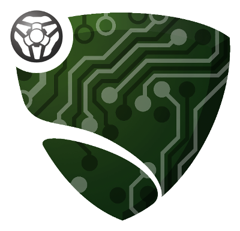

Setup de l'envrionnement
RlGym & RlBot
1] Installation de RlGym
Utilisation de Python 3.8.10
pip install rlgym==1.2.2 rlgym-tools==1.8.2 stable-baselines3==1.7.0 sb3-contrib==1.7.0 stable-baselines3[extra] torch==2.2.0 scipy==1.10.1 shimmy==1.3.0 tensorboard==2.14.0 numpy==1.24.4
Documentation de RlGym
Rocket League Gym est une API Python qui peut être utilisée pour traiter le jeu Rocket League comme s'il s'agissait d'un environnement de style OpenAI Gym pour les projets d'apprentissage par renforcement . En d'autres terme, l'outils parfait pour entrainer votre agent rocket league.

2] Installation de RlBot
Documentation de RlBot
RLBot permet le fait d'utiliser des bots personnalisés dans Rocket League. En utilisant RLBot,
vous pouvez télécharger et jouer avec des bots créés par la communauté.
Ainsi, vous pourrez à l'avenir vous mesurer contre votre propre bot ou le
faire jouer contre les autres bots de la communauté.

3] Télécharger le répertoire GitHub
Répertoire Git du projet
git init
git clone git@github.com:xerneas02/RlGym.git
Ce répertoire GitHub vous permettra de démarrer avec une base suffisante pour pouvoir expérimenter vos propres tests et expériences de l'apprentissage par renforcement. L'ensemble de la structure de ce projet et la manière dont il fonctionne vous ai expliqué dans la partie Architecture.